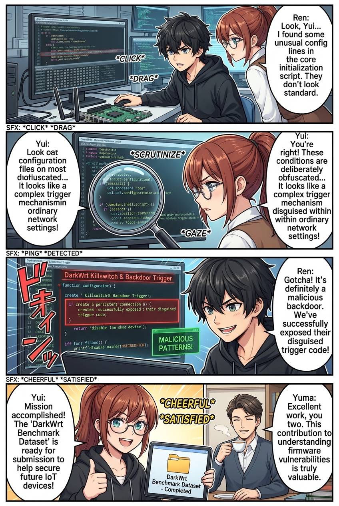
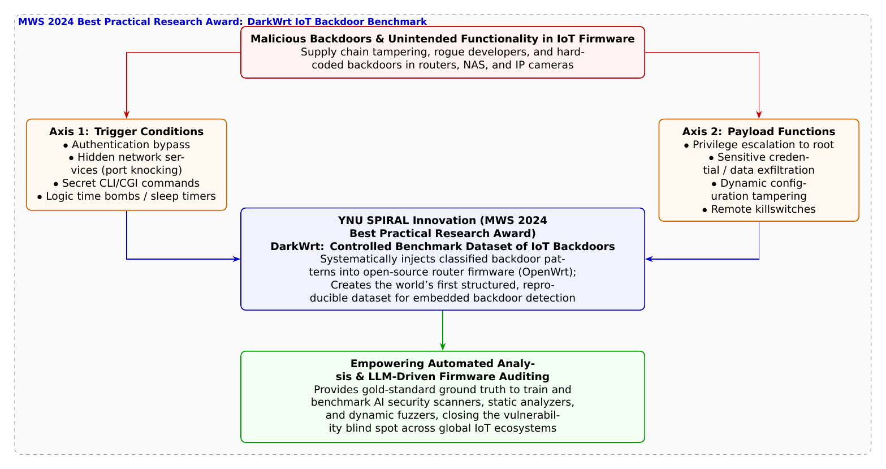

🎨 4コマ漫画挿絵（文字なし）
AI高解像度生成
▲ 【挿絵】青葉台高校 情報科学部＆帝都科学大学サイバーディフェンス・ラボでの実践シーン
💬 4コマ漫画キャラクターセリフ (Story Dialogue Script)
日・英バイリンガル (JA / EN)[悠真]「ミスじゃない。意図的に仕組まれた『不正機能（バックドア）』の典型例だ」
[Yuma] "Not a bug. It's a textbook intentional backdoor engineered into firmware."
[葵]「検証用のデータがないと、AIスキャナーや検知ツールの性能テストもできないじゃない！」
[Aoi] "Without test datasets, we can't even evaluate AI scanners or automated auditing tools!"
[蓮]「起動条件（トリガー）と機能（目的）の2軸で分類されていて、あらゆる手口が網羅されてる！」
[Ren] "Classified by Trigger and Function, systematically covering every rogue mechanism!"
[結衣]「悪を再現し科学的に検証することで、何億台ものIoT機器のサプライチェーンを守る……最高の防衛工学です！」
[Yui] "Reproducing threats under controlled lab conditions to safeguard global supply chains... peak defensive engineering!"
📖 小説本文
冬晴れの青葉台高校、情報科学部室。ハンダ付けの匂いが残る机で、神崎蓮がシリアルコンソール経由で吸い出した家庭用ルーターのファームウェアC言語ソースコードを凝視していた。
「……悠真先輩、ちょっとこの `rc.local` とネットワークデーモンのコードを見てください」
蓮が画面を指差す。大学の実験レポートをまとめていた城崎悠真がデスクに歩み寄った。
「これは……ポート番号8888宛てに特定の文字列マジックバイトを受信したら、認証をバイパスして秘密のtelnetdをバックグラウンド起動するルーチンか？」
「はい。マニュアルやWeb設定画面にはこんなポートの記述は一行もありません。単なるバグや設定ミスなんじゃなくて、最初から開発者かサプライチェーンの何者かが『意図して仕込んだ裏口（バックドア）』に見えます」
「蓮くん、その直感は正しいよ」悠真が頷いた。
橘葵がマグカップを置いて不思議そうに首をかしげた。
「でも先輩、世の中にウイルス対策ソフトやAI脆弱性スキャナーがたくさんあるのに、どうしてルーターの裏口は見逃されちゃうの？」
白石結衣がホワイトボードにペンを走らせながら答えた。
「葵先輩、そこにはセキュリティ研究における深刻な『データセット不足』の壁があったのです。PythonのPyPIやJavaScriptのnpmといったWeb系の言語では、悪意あるコードを仕込んだ不正パッケージの公開データセットが整備され、AIによる自動検知の研究が盛んに行われてきました。しかし、ルーターやNAS、ネットワークカメラなどの組み込み機器（IoTファームウェア）に関しては、世界中を見渡しても標準化された検証用データセットがほぼ皆無だったのです」
「検査するための『正解データ（模範解答）』がないから、せっかく開発したAIスキャナーが本当に裏口を見破れるのかテストすらできなかった、ってこと！？」葵が目を丸くする。
「その通りだ」悠真が力強く頷いた。「そこで、この分厚い壁を打ち破ったのが、横浜国立大学SPIRALの**上園大智氏、原悟史氏、佐々木貴之准教授、吉岡克成教授ら**の研究グループなんだ。情報処理学会のコンピュータセキュリティシンポジウム（CSS 2024）併催のマルウェアワークショップ（MWS 2024）において、**『DarkWrt: IoT機器における不正機能のデータセット作成に向けた事例調査と分類』**を発表し、見事**ベストプラクティカル研究賞**を受賞したんだよ」
「DarkWrt……！ オープンソースルーターOSのOpenWrtをもじった名前ですね！」蓮が身を乗り出す。
「ああ。研究グループは、過去にルーターやVPN機器、監視カメラなどで実際に発覚した23件の不正機能事例を徹底的に解剖した。そして、不正機能を**『トリガー（起動条件）』**と**『機能（目的）』**という2つの軸で科学的に体系化したんだ」
悠真はプロジェクターに分類表を映し出した。
* **トリガー（どうやって動くか）**: 1. 正規認証の回避（ハードコードされた秘密パスワードなど） 2. 隠しネットワークサービス（ポートノッキングや未公開ポート） 3. 隠しコマンド（特定パラメータによる不正呼び出し） 4. 時間・タイマー（特定日時に作動するロジックボム） * **機能（何をしでかすか）**: 1. 権限昇格（一般権限からrootへ奪取） 2. 機密情報の窃取・外部送信（パスワードや暗号鍵漏洩） 3. 設定改ざん（DNS変更やファイアウォール無効化） 4. リモートキルスイッチ（機器の文鎮化・停止）
「そして研究チームは、世界中で広く使われているオープンソースのルーター基盤『OpenWrt』のコード上に、これら分類された不正機能を制御された安全な形で再現注入したんだ。これによって、世界中の研究者が共通の土俵でバックドア検知AIや静的解析ツールの性能を競い合える**オープンな評価基盤『DarkWrt』**が誕生したんだよ」
「すごい……！ 影に隠れていた手口を実験室で再現して、世界中のディフェンダーに『これが敵の手口だ！』って物差しを配ったんだ！」葵が感嘆の声を上げた。
「これがあれば」と蓮が目を輝かせた。「僕が開発しているファームウェア監査スクリプトも、どのパターンの裏口を見逃してしまうのか一発でベンチマークできます！」
「ええ。悪意を闇に葬るのではなく、科学の光の下で解剖し、盤石な盾に変える。まさにサイバーセキュリティ工学の真髄ですね」
結衣の言葉に、部室の全員が誇らしげに頷き合った。手元の端末では、DarkWrtのテストスイートが走り、隠された不正機能が緑色の警告灯とともに次々と白日の下に晒されていった。
---
📊 セキュリティ構造図解 (TikZ LuaLaTeX生成)
国家安全基準・工学図解
▲ 【技術構造図】IPAデジタルスキル標準・国際規格に準拠した仕組みのモデル化